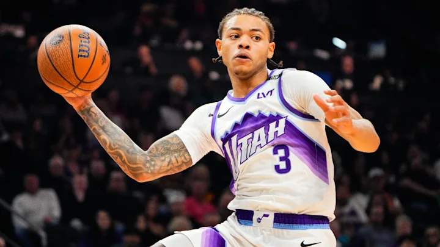
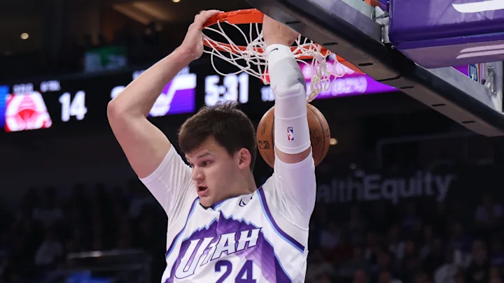

Anyone who follows the NBA is aware that 4 years ago, the Jazz made some interesting moves. They were at the top of the league. They came off a big time playoff run and had a very solid roster. However, they had had this roster for a number of years, and despite the talent, they had failed to have any real success in the playoffs. Queue Danny Ainge, the former GM of the Boston Celtics who had rebuilt their roster a number of years before, leading to a championship. They dismantled the roster, starting a full rebuild, trading away Donovan Mitchell, Rudy Gobert, Mike Conley, Joe Ingles, and others for young players with a lot of upside and a number of draft picks. For the past few seasons, they have been bottom feeders in the league, fighting for the first overall pick, and this year it seems like things are finally turning around. With big moves made at the deadline, including picking up Jaren Jackson Jr, it looks like the Jazz are ready to compete for a campionship.
Here is a preview of next years starting lineup.
-
Keyonte George
- Anyone who has followed the Jazz rebuild has seen Keyonte George grow up fast. Drafted 16th overall in 2023 as a scoring-first guard, George spent his first two seasons learning on the job, flashing talent but struggling with consistency and efficiency. This year, the leap finally came. He stepped into a lead guard role and delivered, averaging 23.6 points, 6.1 assists, and 3.7 rebounds while shooting 45.6% from the field, 37.1% from three, and nearly 90% at the line. The game has clearly slowed down for him—he's picking his spots, making better reads, and controlling the offense rather than forcing it. Stylistically, his trajectory feels similar to an early-career Devin Booker or CJ McCollum: a natural scorer who evolves into a primary offensive organizer. While Utah is still climbing out of the rebuild, George no longer looks like just a promising piece—he looks like the guard the next era will be built around.

-
Ace Bailey
- Ace Bailey’s rookie year with the Jazz was less about instant results and more about laying a foundation—and in that context, it was a success. Drafted fifth overall, Bailey was brought along deliberately, asked to fill a complementary role rather than shoulder offensive responsibility right away. Even so, his talent was obvious. He flashed advanced shot-making for his age, hit spot‑up threes at NBA range, attacked soft closeouts, and used his length to defend and rebound across multiple positions. As the season progressed, his comfort within Utah’s system grew, showing better shot selection and increased physicality on both ends. The box score didn’t always reflect it, but the impact was there. His first year followed a familiar arc for big wings—similar to early Paul George or Michael Porter Jr. seasons—where development, pace, and adaptability mattered more than numbers. By the end of the year, Bailey looked firmly on track, positioned for a meaningful second‑year jump and a long-term role in the Jazz’s rebuild.

-
Lauri Markkanen
- Lauri Markkanen has been the steady constant through the Jazz rebuild, serving as both a bridge from the past and a pillar for what comes next. Since arriving in Utah, he has reinvented himself from a high-level role player into a true focal point, emerging as one of the league’s most dangerous scoring forwards. Over the past few seasons, Markkanen has consistently hovered around 23–25 points per game, pairing elite three‑point shooting with finishing ability inside and strong rebounding from the forward spot. What makes his trajectory so important is reliability—even as the roster around him has been stripped down and retooled, his production and efficiency have held firm. At his peak, he’s played at an All-Star level, spacing the floor like a wing while punishing mismatches like a big. In the context of the rebuild, Markkanen fills a role similar to players like Chris Bosh in early Toronto or Kevin Love in Minnesota: a proven star producing in difficult conditions while anchoring a young roster. Whether he ultimately remains the long-term centerpiece or becomes the elite complement alongside Utah’s rising guards and wings, Markkanen’s presence has stabilized the franchise and accelerated its path back toward relevance.
-
Jaren Jackson Jr
- Jaren Jackson Jr. represents the most important inflection point in the Jazz rebuild—a move from patient development to intentional competition. Already established as one of the league’s premier two‑way bigs before arriving in Utah, Jackson brought identity with him: elite rim protection, defensive versatility, and real scoring punch. In recent seasons he’s hovered around 21–22 points per game while anchoring defenses with 2+ blocks per night, combining weak‑side shot blocking with the mobility to guard on the perimeter. What’s made his presence so impactful in Utah is fit. Surrounded by young guards and wings, Jackson doesn’t need to be the offense—he enhances it by spacing the floor, punishing mismatches, and cleaning up mistakes defensively. His role mirrors that of players like Anthony Davis in New Orleans or Jaren-era Draymond Green with more offense: not just a stat producer, but a structural piece that raises everyone’s ceiling. For a rebuilding team trying to turn the corner, Jackson isn’t just talent—he’s direction, signaling that the Jazz are no longer content with development alone and are ready to start translating potential into wins.

-
Walker Kessler
- Walker Kessler has quietly become one of the most important pieces of the Jazz rebuild, anchoring the team in ways that don’t always show up in highlight reels but consistently show up in winning habits. From the moment he arrived, Kessler established himself as a defensive presence, flashing elite rim protection instincts and a natural feel for positioning that most young bigs take years to develop. He’s consistently averaged around 8–9 points, 7–8 rebounds, and over 2 blocks per game, with his best stretches putting him among the league leaders in blocks per minute. Beyond the stats, his growth has been about refinement—cutting down fouls, improving his timing, and becoming more comfortable defending in space while still dominating the paint. Offensively, he’s stayed within himself, finishing efficiently, setting hard screens, and giving Utah a reliable interior option. His trajectory mirrors that of players like Rudy Gobert early in his career, or a more modern Brook Lopez defensively: not an offense-driver, but a structure-defining center who makes life easier for everyone else. As the Jazz shift toward competitiveness, Kessler’s presence gives them a defensive backbone, the kind every serious team needs if it expects to matter in the postseason.

The Utah Jazz enter the 2026 NBA Draft at a true crossroads, where the focus shifts from stockpiling assets to adding the right high‑impact piece. After a 22–60 season, Utah sits with the **fourth‑best lottery odds**, giving them a legitimate chance to land near the very top of a draft class viewed as both deep and star‑heavy. With luck, they could move up in the lottery and add the proven top‑end talent of AJ Dybantsa or Darryn Peterson, two prospects widely seen as potential franchise cornerstones. Even if they stay put in the third or fourth range, the Jazz are still positioned to come away with high‑level players like Cameron Boozer or Caleb Wilson, prospects capable of contributing early and growing alongside the core. Importantly, Utah doesn’t enter this draft desperate—they already have building blocks in Keyonte George, Ace Bailey, Lauri Markkanen, Jaren Jackson Jr., and Walker Kessler, as well as key pieces off the bench with Bryce Sensabaugh, Isaiah Collier, and Cody Williams which allows them to prioritize best player available over pure fit. Combined with their continued control of future draft capital, this draft feels less like another rebuild step and more like a potential launch point, where one more premium addition could push the Jazz firmly into the league’s next competitive tier.